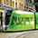

Inwestycje w: Komorniki
-
Wyciszenie i przebudowa ulicy Solnej
Ulica Solna stanowi obecnie „korytarz” dla samochodów w centrum miasta. Przewiduje się jej wyciszenie i przekształcenie w przyjemny i atrakcyjny bulwar miejski.
-

Budowa Wartostrady
Praca nad realizacją projektu Wartostrada zapewni mieszkańcom miasta Poznania oraz turystom większy dostęp do strefy nadrzecznej.
-
Odtworzenie połączenia z historycznym Traktem
Możliwe jest ponowne zwrócenie uwagi na kościoły i historyczne elementy położone wzdłuż najważniejszego historycznego traktu miasta.